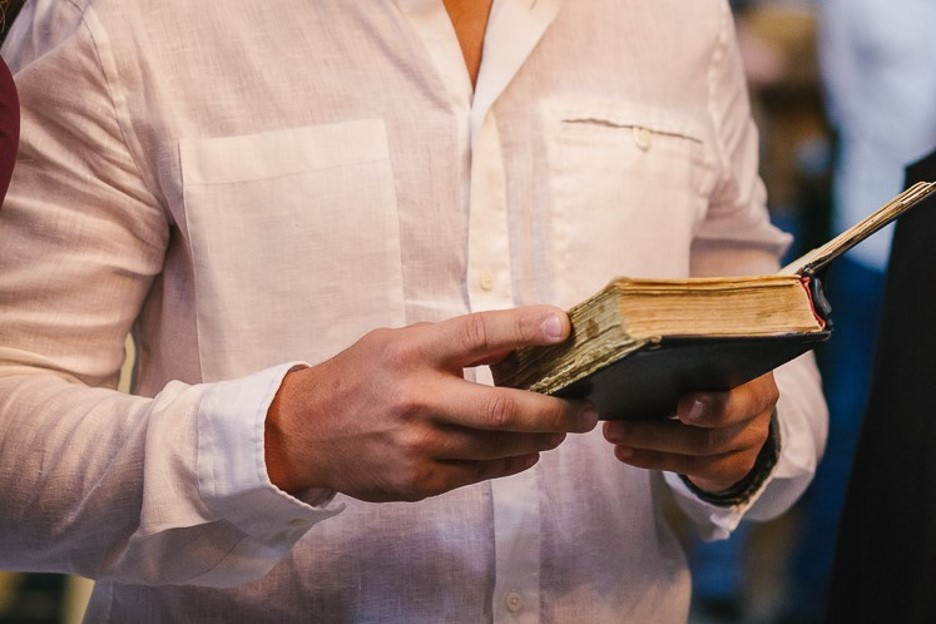
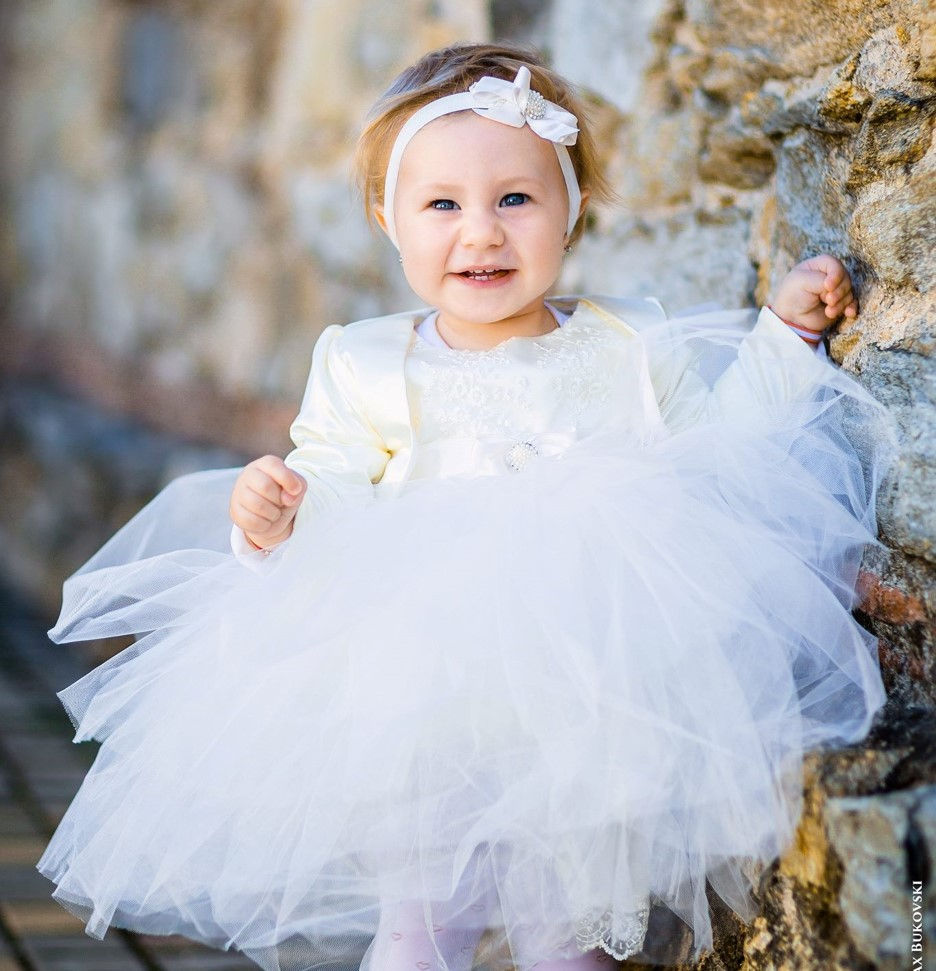

Кръщението е едно от седемте тайнства, в които естествено встъпва всеки един православен християнин. При кръщението се издейства или символизира очистване от греха, както и смърт на стария човек (за стария живот) и възкресение за нов живот на вярващия човек. Обикновено, кръщението трябва да стане още докато детето е малко, или дори бебе.
Самият ритуал "Свето Кръщение" може да се извърши в църква или манастир. Действията извършвани при Кръщенето са следните:
- Отричане от сатаната. Отрича се целия мироглед, основан на гордост и себелюбие, който отделя човека от Бога.
- Изповядване на Христа. Тук кръщаваният заявява, че се съчетава с Христа. Този избор се потвърждава с произнасяне на Символа на вярата. 
- Помазване с миро(елей). Елеят е символ на светлина и радост, на живота като пълнота, на изцеление, но и символ на помирение.
- Свещеникът миропомазва във формата на кръст кръщавания по челото, гърдите, ушите, ръцете и нозете. Това е символ на пресътворяване на тялото на човека и сетивата му.
- Преобличането с дрехи в бял цвят е символ на прераждането на човека-духовна чистота и невинност, получени чрез Светото тайнство Кръщение. 
- Горящите свещи в ръцете и ритуалните три обиколки около купела са символ на духовна радост. Пламъка на свещите е знак, че новопокръстеният поема отговорносттта пред себе си и Бога винаги да гори духом. Кръгът около купела, символизира вечната принадлежност на кръщавания с Исус Христос.
- Подстригването на косите на стъпващия в Христовата вяра символизира готовността му за покорство и саможертва.


Кръщенето е празник, свързан с пречистването. Ние можем да направим този празник още по-магичен като направим атмосферата подходяща за отпразнуването му. Нека започнем с покани и подаръци за гостите, подготвим всичко за самото Кръщение и създадем нежна и красива атмосфера за празника след това.
Оферта за Вашия светъл празник, може да получите, след като отправите запитване лично или на посочения имейл адрес. Ние можем изцяло да спестим Вашето време за подготовка.
Списък с всичко необходимо за кръщението:
- Покана за кръстниците и за гостите
- Бутилка червено вино
- Хавлиена кърпа за свещеника
- Бутилка олио или зехтин
- Голяма хавлийка, с името на Кръщелника и датата на Кръщенето
- Голяма свещ, която Кръстника или Кръстницата държи от името на детето, по правило тя се купува от Кръстника или Кръстницата, разчитайте на нас да бъде елегантно и изящно украсена, в цветовете, на които сте се спрели. За другите присъстващи свещите трябва да се закупят от църквата.
- Шишенце пълно с олио или зехтин (миро), което свещеника ще освети. Шишенцето може да запазите и след Кръщенето и когато има повод може да помажете детето за здраве.
- Шишенце за светена вода, след Кръщенето Вие или свещеника отсипвате от осветената вода в шишенцето и също си го запазвате.
- Кутийка за косичка, при Кръщаването се отрязва кичурче коса, а кутийката е за да го съхраните във времето.
- Сапунче, необходимо за самия ритуал.
- Кутия за дрешки, тя е много добро допълнение, защото освен че ще сложите дрехите и обувките вътре, след Кръщенето може да подредите и приберете всички спомени от прекрасното събитие.
- Бурканче с мед, което вкъщи напълвате с мед, а на самото Кръщене (след като вече е осветено), отсипвате от меда в 15. съдче, в което ще е удобно след ритуала гостите да си топнат парче от питата и да се почерпят за здравето на новопредставеното християнче.
- Папка за Кръщелно свидетелство, красиво декорирана в темата на събитието, когато я отворите вътре има място за Кръщелното свидетелство от едната страна и Акта за раждане от другата.
- Кутийка за кръстче и разбира се кръстче със синджирче за Кръщелника, слага се след ритуала, по правило е златно, но не е задължително, купува се от Кръстника или Кръстницата
- Подаръчета (комплименти) за гостите
- Красива кошничка или поднос, които да поднесете почерпката след Кръщението.
- Книга за пожелания за Кръщене, където, освен че всеки ще напише пожелание за детето Ви, ще може да си дописвате за важни събития и случки в неговия живот, да залепвате снимки и други спомени (например първа рисунка, хербарии с първото подарено цвете и т.н.).
- Аранжиране и украса на „Сладката маса“
- Етикети за вино и ракия
- Украса на масите (масата) за гости
- Всякакви други детайли, необходими за обстановката.